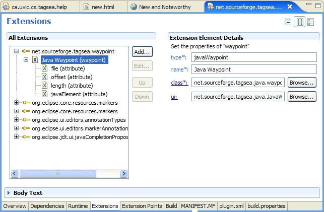
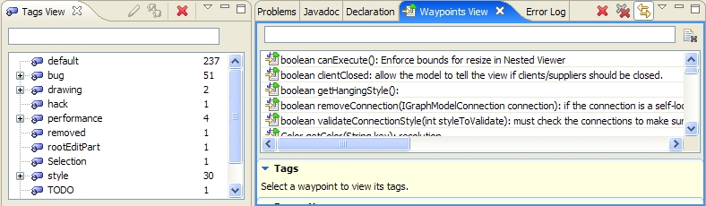
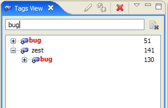
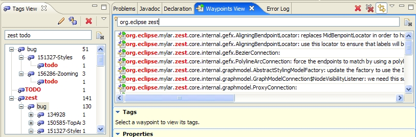
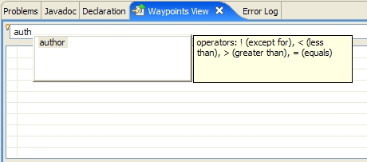
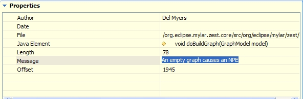
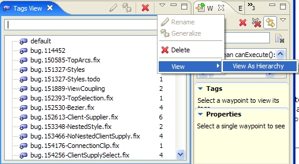
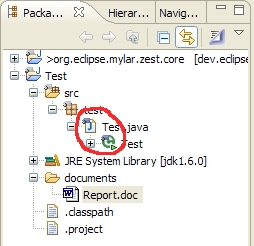
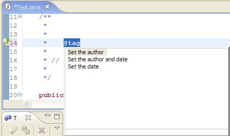
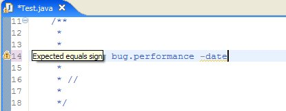

New plugin architecture |
Waypoint types and user interfaces can be plugged-in.

There is a new way to plug-in new waypoint types. Extenders can declare the
attributes and the "parent" waypoint types for new waypoints. Child types
of waypoints only inheret attibutes, not functionality from the parent.
Abstract classes and interfaces are supplied to allow extenders to have control
over major life-cycle events and changes to the waypoints, as well as waypoint
navigation. Extenders can also supply
optional ui extensions to the TagSEA core ui.
|
|
New implementation for hierarchical tags |
Tags are no longer hierachical within the model. Instead, a naming convension
is used to treat tags as hierarchies. Dot-separated tag names can be treated as a
tree structure, and can be manipulated as such within the core ui.
|
|
New platform waypoint/tag model management |
Users of TagSEA are now exposed only to an abstract interface of the tags
and waypoints model. Extenders and users don't have to worry about managing
references to waypoints and tags as much because most of the work is taken
care of in the platform.
|
|
New waypoint/tag change managment |
Changes to waypoints and tags can now be done atomically, or as sets within
a TagSEAOperation which can be run by the main TagSEAPlugin
instance. All changes to the waypoint and tags models are synchronized by the
platform so that concurrent changes to the model can't interfere with one another.
Changes that occur within a TagSEAOperation are all compressed and combined into a
single event that doesn't get posted to listeners until the operation has completed.
|
Separated tag/waypoint views |
The Tag and Waypoint views are now separated in order to maximize screen realistate.

The Waypoints view can be linked to respond to the selection in the Tags view.
|
|
Smarter filtering in Tags View |
The filtering in the Tags View now correctly finds matches in parent and child tag
names.

|
|
Filter highlighting |
When using patterns for filtering in both the Tags View, and the Waypoints View,
the portion of the item that matches is highligted so that it is easier to keep
track of what is being filtered.

|
|
Properties (attributes) filtering for waypoints |
Waypoints can be filtered by property values. Available properties can be viewed
via a "Ctrl-space" content-assist, and are determined by waypoint plugins.

|
|
Advanced properties tab for waypoints |
All the properties/attributes for a waypoint can now be viewed in the advanced
properties tab. The visual representation of the properties can be determined by
the waypoint type's defining plugin. Property values may be changed within the
properties tab as well, if the defining plugin will allow the change.

|
|
Fixed and improved tag refactoring |
All previous tag refactorings are still available and have been significantly
improved for reliability. There is also a new "Generalize" refactoring that moves
all waypoints that are tagged by the "child" tags of the generalized tag into the
parent of that tag. This allows users to remove a tag name without removing the entire
tag sub-tree.
|
|
Support for viewing tags as hierarchies, and using the flat, raw names |
Hierarchies are now computed solely by a naming convension on the tags. Users
can view the tag names both as a hierarchy and using the raw names.

NOTE: Moving and generalizing of tag names is not allowed when the tags are viewed
using their flat names. Also, renaming and deleting tags reacts differently than when
done in the hierarchy.
|
|
Waypoint markers and annotations |
A new marker type net.sourceforge.tagsea.waypointmarker has been
created to make it easy for extenders to add decorations and annotations for
waypoints that reference resources in the workspace. Creating markers of this type,
or subtypes of it, on resources in the workspace will automatically add decorations
and annotations in the IDE.

|
New waypoint syntax |
Waypoints are found in all comment types, but are only parsed to the end of the line.
Metadata is handled differently as well: it is no longer parsed within square-brackets
at the end of the waypoint text, but as name-value pairs in the tag portion of the
waypoint text. For example:
Old Syntax:
//@tag mytag : This is a comment [Date=Dec 5. 2006, Author=My Name]
New Syntax:
//@tag mytag -date=05/12/2006 -author="My Name" : This is a comment
Metadata values that contain white space or colons must be within double-quotes.
the valid metadata for a waypoint is only date and author. Dates can be customized for
locales and languages. The format for a locale-specific date is:
-date="languageCOUNTRY:Short-Date"
Where language is the two-letter ISO language code,
COUNTRY is the two-letter ISO country code, and
Short-Date is the short-date format as defined by the Java standard.
Some examples are:
January 15, 2007 in Canada:
-date="enCA:15/01/07"
January 15, 2007 in US:
-date="enUS:01/15/07"
If no locale is specified, the default locale is used.
|
|
Quick-fix for author and date attributes |
A quick-fix is supplied for quickly adding author and date to the waypoint.

|
|
Warnings for bad tag syntax |
Warnings are now supplied when the syntax for a waypoint is bad.

|
|
Editor saves for waypoint and tag changes |
Users are now given indication that effected dirty editors will be saved when waypoints
and tags are changed.

|
|
More complete code completion |
Ctrl-space code completion for waypoints now gives a more complete list of
available tags.
|
|
Automatic synchronization of waypoints and tags |
Waypoints and tags are now automatically synchronized with the Java editors
as you type. You don't have to save your files in order to see the changes in the
waypoints and tags.
|
|
Waypoint attributes can be changed inside the Waypoints View |
The "author", "date", and "message" attributes on Java waypoints can be changed
within the waypoints view. The Java source code is updated when the changes are
applied.
|